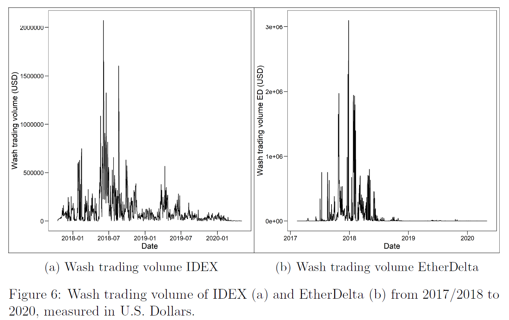
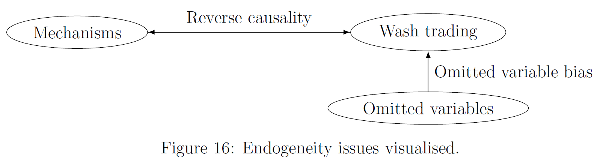

Wash trading mechanisms
MSc Thesis: Financial Economics
Introduction
This thesis studies the mechanisms behind wash trading, a form of market manipulation in which manipulators, often exchange insiders, trade either with themselves or among controlled accounts to artificially inflate trading volume. Because trading volume is a key metric for ranking exchanges on platforms such as CoinGecko, inflated figures can make an exchange appear more liquid and attractive, thereby drawing in unsuspecting traders. However, these transactions are misleading, as they create the illusion of genuine market activity where none exists.

I hypothesized three possible mechanisms that may influence wash trading volume:
1. I chose ransaction fees because higher transaction fees make wash trading less profitable. Therefore, there will be less wash trading.
2. I also chose to inspect the hiding mechanism because wash traders face reputational and legal costs if they are caught engaging in fraudulent acts such as wash trading. From an economic point of view, if the chance of being caught is higher, the expected profitability of wash trading declines (and there will be less wash trading).
3. Finally, I hypothesized that sentiment may positively influence wash trading volume. If market sentiment is high, (new) investors search for the best exchanges and are more easily attracted by the inflated volume metrics wash trading produces. This high sentiment makes wash trading more profitable.
Research question
Can transaction fees, the hiding mechanism, and market sentiment explain wash trading patterns?

Approach
To address this question, I analyze three historical datasets from major cryptocurrency exchanges where wash trading has previously been detected: Mt.Gox (2011–2013), IDEX (2017–2019), and EtherDelta (2017–2020). I employ a combination of correlation analysis, multiple regression, and vector autoregression (VAR) models to test whether these three hypothesized mechanisms can explain fluctuations in wash trading volumes across time and platforms.



Findings
The results surprisingly indicate that transaction fees are not a robust determinant of wash trading and appear unlikely to play a major role in influencing manipulation behavior. The hiding mechanism, while conceptually plausible, proved difficult to operationalize, and the proxies used (such as Google Trends measures of cybercrime or exchange popularity) failed to generate consistent results. By contrast, market sentiment emerged as the most promising factor. On Mt.Gox and EtherDelta, sentiment proxies such as search intensity and trading volume were positively linked to wash trading, and in some models even Granger-caused it. This suggests that manipulators strategically take advantage of high-sentiment periods to maximize impact. However, we could not observe these results on the IDEX dataset, which may be due to IDEX having stronger institutional safeguards and anti-manipulation measures, such as KYC and self-trade prevention.
Conclusion
No single mechanism consistently explains wash trading across all datasets, underlining the complexity of manipulation strategies and econometric modeling. Still, the evidence points to sentiment as a key enabler: periods of heightened optimism and hype make investors more vulnerable to misleading volume signals and give manipulators the greatest opportunities to profit.
Policy recommendations
The findings reinforce the importance of institutional safeguards. Effective measures to curb wash trading include Know Your Customer (KYC) rules that make multi account manipulation harder, and self trade prevention mechanisms that technically block transactions with the same counterparty. In addition, investor warnings, especially targeted at times of high market sentiment, could help mitigate behavioral biases that manipulators exploit. Finally, greater regulatory oversight and more transparent reporting standards are crucial, as unregulated or lightly monitored platforms remain the most fertile ground for manipulation. Together, these measures reduce both the incentives and the opportunities for wash trading to occur.
Contribution
The main contribution of this thesis lies in shifting the focus from detecting wash trades ex post to explaining their timing and underlying drivers. By testing transaction costs, hiding behavior, and sentiment across multiple datasets, it frames wash trading as an economic decision shaped by costs, risks, and psychological factors rather than as purely ad-hoc fraud. Although the empirical evidence was mixed, the thesis advances the debate by showing that understanding manipulation requires attention to investor behavior, platform-level incentives, and market oversight.
2025 note:
When I wrote this thesis (2022), cryptocurrency was still relatively new but attracted significant attention due to the growing enthusiasm around blockchain technology, as well as the emergence of new crypto asset classes such as NFTs and smart contracts. However, suspicious behavior had always been part of the scene as well: scams, pump-and-dump schemes, and other forms of misconduct were not uncommon. My goal was to build upon earlier findings and investigate whether there were was a rational structure—behind these illicit activities.
The thesis proved challenging, partly because there was limited literature and almost no existing code to build upon. Extracting data from previous studies and replicating their preprocessing steps required considerable effort. In the end, it worked out well, but looking back now, with the current advances in artificial intelligence and my improved coding experience, I realize that debugging and implementation could have been completed in a fraction of the time.
If I were to revisit the thesis today, I would consider narrowing the sample to periods in which wash trading actually occurs, rather than relying on a long time series dominated by zeros. Another idea would be to test a VEC model or experiment with nonlinear and machine-learning approaches to uncover more complex dependencies. Finally, it is possible that key explanatory variables were omitted. Even now I cannot easily point to a clear candidate, but this remains a natural limitation of the analysis. These are aspects that could be refined, but at the time I believe the thesis represented a creative and original contribution.

Looking back, I conclude that most initiatives in the crypto space that aimed to move beyond speculation have not succeeded in achieving real market adoption. Nevertheless, blockchain technology itself will continue to develop and will likely play an important role in the future, particularly as part of Central Bank Digital Currencies (CBDCs).